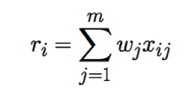
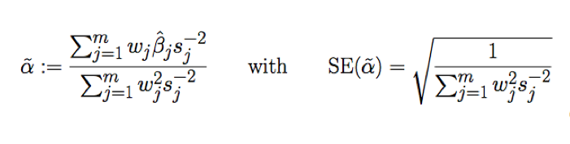
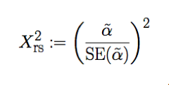

The National Human Genome Research Institute (NHGRI) maintains a compilation of data from GWAS publications consisting of 1961 publications and 14,012 SNPs (as of August 2014), and was used as our starting point (see web links below). All SNP associations that are genome-wide significant (P < 5 x 10 ^ -8) are pooled by trait name into individual IVFs with information on the SNP id, trait effect and effect allele, p-value, and PubMed ID. We further amend with the non-effect allele using data from the 1000 Genomes project (Phase I) and `polarize’ the effect sizes given according to the unit syntax provided.
For the IVF to satisfy conditions of MR analysis, MeRP provides filtering steps for LD and confounding trait associations.
First, associations with potential confounding traits are assayed from within the NHGRI GWAS catalog, excluding associations with user-specified disease endpoints or traits that are intertwined with the trait of focus (e.g., LDL with Total Cholesterol). Next, we provide a summary file containing association p-values for >2 million SNPs and 15 cardio/metabolic traits obtained from the public domain for additional filtering (see below). Users can filter SNPs that exceed a given strength of association in these data (by default, P<0.001), or by total number of weak associations (by default, 4 or more associations with P<0.05). Users can also select a subset of ‘primary’ confounding traits such that SNPs with a single association with one of these confounding traits are filtered out (by default, P<0.01). Furthermore, users can ensure that the total number of potential confounding associations overall do not exceed a specified proportion of the IVF. By default, if the total number of P<0.05 associations exceeds 10% of total SNPs times the number of potential confounding trait associations, SNPs are iteratively removed based on total P<0.05 violations (largest to smallest number). Finally, remaining SNPs are grouped together based on pairwise LD (r^2>0.05) via web query (see below), using the SNP with the most significant trait association value as the lead SNP for each LD group. The lead SNPs each LD group comprise the list of genetic variants advanced into MR analysis. In order to satisfy conditions of MR analysis, we must ensure that each of the genetic variants is independent of confounding factors of disease or trait of interest. In addition, we make sure that no two variants are in linkage disequilibrium, a measure of non-random association of two alleles, which would cause a disproportionately weighed causal effect on disease and violate random assortment assumption of MR.
P-value association data for the provided file of anthropometric, lipid, blood pressure, and glycemic data was obtained from publicly available resources (web-links provided below). This included data for Systolic (P_SBP) and Diastolic Blood Pressure (P_DBP) from the International Consortium for Blood Pressure Genome-Wide Association Studies. Association data for low and high-density lipoprotein cholesterol, total cholesterol, and triglycerides (P_LDL, P_HDL, P_TC, and P_TG) were obtained from the Global Lipids Genetics Consortium. Association data for body mass index (P_BMI), Height (P_HEIGHT), Waist-hip Ratio adjusted for BMI (P_WHRadjBMI) were obtained from the GIANT Consortium. Association data for Fasting glucose (P_FastGlu), 2-hour glucose adjusted for BMI (P_2hrGLUadjBMI), glycated hemoglobin linebreak[4] (P_HbA1C), fasting insulin levels (P_FastIns), fasting proinsulin levels linebreak[4] (P_FastProIns), HOMA-B (P_HOMA-B) and HOMA-IR (P_HOMA-IR) were obtained from MAGIC. Data from each of these sets were merged into a single file by dbSNP rs number, and missing data was denoted (``NA”). Final, filtered instrumental variable files (IVF) will contain the number of `NAs’ found in the warning flag column, or a `Not-in-pval’ flag if the SNP was not in the P-value data file. All citations can be found in supplementary note (in submission)
LD association data for correlation pruning was obtained from the Broad Institute SNAP Pairwise LD Proxy Server, a publicly available web tool (see web links below). MeRP makes direct requests to the SNAP server to obtain LD association data. The SNP data set used is 1000 Genomes Pilot 1 with the CEU population panel. The parameters used in our tool are as follows: R^2 threshold = No Limit, Distance limit = 500, Include each query snp as proxy for itself = False (unchecked), Suppress warning messages at output = True (checked). Remaining parameters are kept as Pairwise LD Proxy defaults. If a queried SNP is not found in 1000 Genomes Pilot 1, we obtain Pairwise LD with HapMap release 22 data set with the same parameters. If SNP LD data that is not found in 1000 Genomes data is found in HapMap release 22, we add the LD data to our the pruning step. SNPs that are not in either LD data set are flagged with ‘Not-in-LD’ in the final IVF
Our pipeline utilizes a valid statistical method for estimating causal effects based on multi-SNP genetic instrument using summary data alone (Johnson 2012). From this calculation, we obtain an estimate of the causal effect equivalent to that obtained from direct genotype MR under the assumptions that (i) the effect of individual SNPs are relatively weak, (ii) the SNPs used in IV are not correlated (no LD), and (iii) that the effects of multiple SNPs on the trait can be described as an additive, linear combination of the individual SNPs. These, in addition to the standard MR assumptions satisfied, provide an approach to estimate the causal effect and association statistics.
First an additive multi-SNP risk score is calculated. For m chosen SNPs, the risk score for i-th subject is:
Here, x-ij is the dose of allele at j-th SNP in the i-th. The value wj refers to the weight of the j-th SNP, and in our case this is analogous to the effect-size of SNP-trait association. Our goal is the determine the association between this risk score and a disease phenotype using a linear regression model where the likelihood of disease phenotype depends solely on trait risk score through a single coefficient, α. (Johnson 2012).
We look for an estimate for α, which will be our effect estimate of the trait-disease endpoint association. Johnson defines a formula for such an estimate as well as the standard error on the estimate:
Here, w-j is the effect size of j-th SNP (in our case ln(OR) of the SNP in our trait file), β-j is the effect size estimate of j-th SNP with disease phenotype, and sj is the corresponding standard error on βj.
These, in addition to the standard MR assumptions satisfied through preparation of IV through filtering lead to a reliable estimate of the causal effect. With α and SE(α) , we calculate chi-square on result with:
We do this by using the fact that our test statistic is a Wald association test and is chi-square distributed with 1 degree of freedom. From this we calculate p-value using the chi-squared distribution.
We also calculate the OR of Effect = e^α, and the lower and upper 95% Confidence Interval bounds on α (CI) = α +/- 1.96 x SE(α).
Pairwise LD query data: https://www.broadinstitute.org/mpg/snap/ldsearchpw.php
Systolic and Diastolic Blood Pressure: See supplementary materials provided with the International Consortium for Blood Pressure Genome-Wide Association Studies.
Lipids and Triglycerides: http://www.sph.umich.edu/csg/abecasis/public/lipids2013/
BMI, Height, WHR (adjusted for BMI): http://www.broadinstitute.org/collaboration/giant/index.php/GIANT_consortium
Glycemic Traits: http://www.magicinvestigators.org/downloads/
Type 2 diabetes: http://diagram-consortium.org/
Coronary Heart Disease: http://www.cardiogramplusc4d.org/
For citations refer to original paper and supplementary note (in submission).